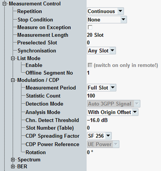

The "Measurement Control" parameters configure the scope of the WCDMA multi-evaluation measurement.
See also: "Statistical Settings"

The hotkey "Assign Views" selects the view types to be displayed in the overview. The R&S CMW does not evaluate the results for disabled views. Therefore, limiting the number of assigned views can speed up the measurement. Press the softkey "Multi Evaluation" to activate the hotkey.
Remote command:Defines how often the measurement is repeated if it is not stopped explicitly or by a failed limit check.
- Continuous: The measurement is continued until it is explicitly terminated. The results are periodically updated.
- Single-Shot: The measurement is stopped after one statistics cycle.
Single-shot is preferable if only a single measurement result is required under fixed conditions, which is typical for remote-controlled measurements. Continuous mode is suitable for monitoring the evolution of the measurement results in time and observe how they depend on the measurement configuration, which is typically done in manual control. The reset/preset values therefore differ from each other.
- "None": The measurement is performed according to its "Repetition" mode and "Statistic Count", irrespective of the limit check results.
- "On Limit Failure": The measurement is stopped when one of the limits is exceeded, irrespective of the repetition mode set. If no limit failure occurs, it is performed according to its "Repetition" mode and "Statistic Count". Use this setting for measurements that are intended for checking limits, e.g. production tests.
Specifies whether measurement results that the R&S CMW identifies as faulty or inaccurate are rejected. A faulty result occurs, for example, when an overload is detected. In remote control, the cause of the error is indicated by the "reliability indicator".
- Off: Faulty results are rejected. The measurement is continued. The statistical counters are not reset. Use this mode to ensure that a single faulty result does not affect the entire measurement.
- On: Results are never rejected. Use this mode for development purposes, if you want to analyze the reason for occasional wrong transmissions.
Defines the number of consecutive slots that form a single measurement interval. The measured slots are displayed in all multislot diagrams, e.g. error vector magnitude, CDP vs. slot, and UE power.
See also "Defining the Scope of the Measurement"
Remote command:Selects the slot to be used for all single slot measurements,e.g. error vector magnitude vs chip, CD monitor, ACLR, emission mask. Do not confuse the preselected slot with the slot used for tables of statistical values for multislot measurements, see parameter "Slot Number (Table)".
See also "Defining the Scope of the Measurement"
Remote command:Selects a slot number (0 to 14) that the R&S CMW displays as the first slot in the measurement interval. "Any" means that the measurement starts as fast as possible, beginning with the first captured slot. "Free Run" measurements use always "Any".
Selecting a synchronization slot number can speed up the synchronization process. The trigger settings must be configured according to the selected slot. Example: To use an external frame trigger with synchronization slot number 5, a trigger delay corresponding to 5 slots has to be entered. Omitting the trigger delay results in a synchronization error because slot number 5 is expected but slot number 0 is found after the measurement has been triggered.
Remote command:The list mode is essentially a remote control feature; for an introduction see "Multi-Evaluation List Mode".
Option R&S CMW-KM012 required.
Shows whether the list mode is enabled and disables an enabled list mode. Enabling the list mode is only possible via the remote control command below.
Remote command:Controls modulation and CDP measurements.
Selects a half-slot or a full-slot measurement.
- Full-Slot:
The modulation and code domain measurement results are based on the entire WCDMA slots (667 μs). A 25 μs guard period at the beginning and at the end is excluded. The diagrams/traces contain one value per slot. This measurement mode is appropriate for signal configurations where the UE power is not expected to change within the slot (e.g. a pure DPCH without HSDPA channels).
The BER measurement is only supported as full-slot measurement. - Half-Slot:
The modulation and code domain measurement results are based on half the WCDMA slot (333 μs). A 25 μs guard period at the beginning and at the end of each half-slot is excluded. The diagrams/traces contain two values per slot. This measurement is appropriate for signal configurations where the UE power changes within the slot (e.g. a DPCH + HSDPA channel configuration with appropriate timing offset).
Half-slot measurements require option R&S CMW-KM401.
Defines the number of measurement intervals (for BER transport blocks) per measurement cycle (statistics cycle, single-shot measurement). This value is also relevant for continuous measurements, because the averaging procedures depend on the statistic count.
In the WCDMA multi-evaluation measurement, the measurement interval is completed when the R&S CMW has measured the full sequence of measured slots. The measurement provides two independent statistic lengths for the modulation and spectrum results. In single-shot mode and with a shorter spectrum statistic length, the ACLR evaluation is stopped while the R&S CMW still continues providing new modulation results.
See also: "Statistical Results"
In the "Auto 3GPP Signal" detection mode, the R&S CMW uses the scrambling code and slot format information to synchronize to the received signal, irrespective of the channel configuration.
Remote command:Defines whether a possible origin offset is included in the measurement results (modulation and code domain) or subtracted out.
- With origin offset:
The results include a possible origin offset. This mode conforms to 3GPP specifications. - No origin offset:
The origin offset is subtracted out.
Minimum signal strength of the DPDCH and the E-DPDCHs in the WCDMA signal (if present) to be detected and evaluated. The threshold corresponds to the ratio of the (E-)DPDCH power to the (E-)DPCCH power in dB. Channels with power below the threshold are not considered for the calculation of modulation and CDP results.
The channel detection threshold is important to distinguish the (E-)DPDCH from unwanted signals, e.g. noise or non-orthogonal components that can be detected as fictitious (E-)DPDCHs. A low threshold value represents a weaker selection criterion and increases the risk of detecting unwanted signals. A high threshold can prevent the detection of real (E-)DPDCH signals.
Remote command:Selects a particular slot within the measurement length where the R&S CMW displays a table of statistical measurement results for the multislot measurements. These results are measured for all slots and can be displayed for one slot at a time.
See also "Defining the Scope of the Measurement"
Remote command:Selects the spreading factor used for display of the code domain monitor results. The values range from 4 to 256 in powers of 2. For a PCDE measurement according to 3GPP TS 34.121, the spreading factor must be set to 4.
Remote command:Selects the reference for the code domain power (CDP vs. slot and CDP in CD monitor). In the current software version, the CDP is defined relative to the total power of the signal, i.e. to the UE power.
Defines the initial phase reference (φ=0) for I/Q constellation diagrams of QPSK signals (see parameter "UL Configuration").
For QPSK signals the symbol mapping between the logic data and the constellation points cannot be evaluated. As a consequence the overall phase of the diagram is random. The I/Q imbalance results depend on this random overall phase.
- 0°: Suitable for QPSK signals with constellation points on the I and Q axes (e.g DPCCH plus DPDCH).
- 45°: Suitable for QPSK signals with constellation points on the angle bisectors between the I and Q axes (e.g. DPCCH only).
For WCDMA signals ("UL Configuration" ≠ QPSK), the rotation setting is irrelevant. The symbol mapping can be evaluated and the position of the constellation points is fixed.
Remote command:Controls spectrum measurements.
For the description of statistic count, see "Statistic Count".
Remote command:Controls BER measurements.
For the description of statistic count, see "Statistic Count".
Remote command: